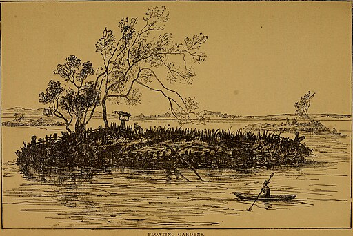
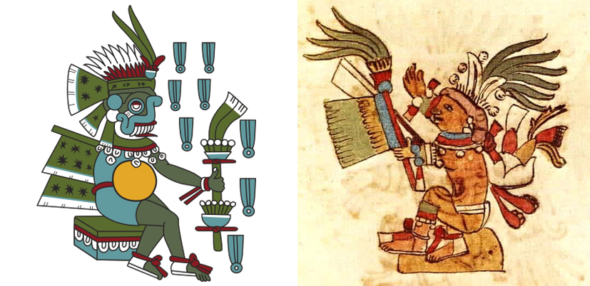

Naturaleza, cultura y sociedad: una visión integradora
En esta ocasión llegamos al Valle de México alrededor del año 800 d.C. Al llegar a este lugar, observas extensas áreas de humedales y lagos, abundante vegetación y una diversidad de fauna asombrosa, además te impacta ver que el lago está lleno de islas artificiales, las chinampas, que son parcelas flotantes hechas con tierra y plantas acuáticas.

Imagen de SteinsplitterBot. Wikimedia Commons
¿Crees que la invención de las chinampas contribuyó a la prosperidad de esta región? ¡Así es! Al interactuar con la naturaleza y adaptarse a su entorno, los pobladores desarrollaron una serie de prácticas culturales que les permitieron aprovechar los recursos naturales de manera sostenible, esto produjo una serie de beneficios sociales, políticos y económicos en la región.
Te acercas a los pobladores y te dicen que ellos son Xochimilcas, que llevan viviendo mucho tiempo ahí y que las chinampas son una innovación tecnológica creada por ellos para ampliar sus áreas de cultivo y mejorar su producción agrícola, gracias a esto su sociedad ha tenido un gran auge por lo que han trasladado su ciudad sagrada a la isla de Tlilan y han extendido su dominio hacia zonas aledañas, donde ejercen poder político y económico.
Mientras te desplazas en una trajinera, puedes notar que los xochimilcas tienen una cultura floreciente, que se expresa en su arquitectura, su música, su poesía y su arte, además tienen una sociedad próspera, que se divide en barrios o calpullis según el oficio de sus habitantes. Los habitantes aprovechan y cuidan la naturaleza, ya que saben que de ella depende su bienestar.
Durante el viaje, te das cuenta que algunos pobladores están realizando un ritual, te acercas a ver y te explican que es en honor a Tláloc, dios de la lluvia, y Centeotl, dios del maíz; que lo hacen para pedirles que este año la cosecha sea abundante y próspera.

Tláloc. Imagen de autor desconocido. y Centéotl. Imagen de Pedro de Los Ríos.
¿Habías escuchado sobre estos dioses previamente? Seguramente te es familiar Tláloc, el cual fue venerado en toda Mesoamérica. La veneración a estos dioses estaba estrechamente vinculada a las prácticas agrícolas y las temporadas de siembra y cosecha. Las festividades y rituales celebrados en honor a la naturaleza se convirtieron en parte esencial de la identidad cultural de la comunidad.
A lo largo del tiempo, la naturaleza, la cultura y la sociedad de Xochimilco evolucionaron y se adaptaron. Las prácticas culturales y el conocimiento transmitido de generación en generación permitieron que la comunidad floreciera en armonía con su entorno. Esta relación simbiótica entre humanos y naturaleza es un ejemplo ilustrativo de cómo la antropología estudia las interacciones complejas entre los seres humanos y su entorno, y cómo se construyen sistemas culturales y sociales en respuesta a las condiciones naturales y ecológicas. ¿Crees que ésta relación entre naturaleza, sociedad y cultura siga existiendo en este lugar?
Regresemos a nuestro tiempo para que compruebes si actualmente existe o no una relación entre naturaleza, sociedad y cultura en el lago de Xochimilco. Te invitamos a revisar el siguiente video, en el que te contamos todo acerca de este tema.
Naturaleza, sociedad y cultura.

Naturaleza, cultura y sociedad
¿Qué te pareció el video? Seguramente hay nuevos conocimientos e ideas que rondan tu cabeza en este momento. Para ponerlos en práctica, te invitamos a participar en el siguiente foro.
¿Qué tal te fue en el foro? Tal vez te hayas percatado que algunos de tus compañeros llevan a cabo de forma distinta las mismas celebraciones, además de que las celebraciones tienen mucho que ver con los productos que se tienen disponibles en esa época del año.
Otro aspecto que es importante considerar es que cada familia crea sus propias tradiciones, con base en lo que han vivido y las culturas con las que han tenido contacto.
Te invitamos a continuar observando tu entorno y tratar de descubrir la relación que existe entre la naturaleza, cultura y sociedad en lo que te rodea. Por ahora, es momento de continuar con nuestro viaje.